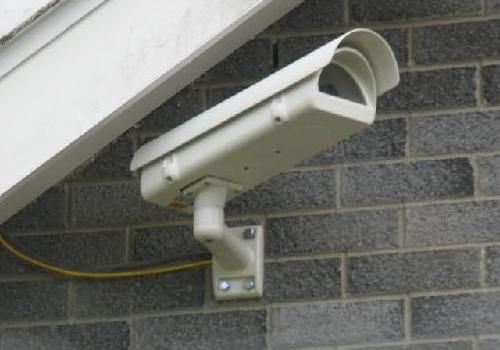

Images of the sky conditions in the vicinity of the MST Radar site
have been recorded at 1 minute intervals since 25th April 2007. The
camera (an Axis 211 network camera) is mounted on the (nominally)
north-facing wall of the site bungalow. It is angled slightly above
the horizontal and towards a magnetic bearing of 285°,
i.e. approximately WNW. It gives good images during daylight
hours - see the sample below. Between dusk and
dawn clouds can only be seen if they are illuminated by the
Moon. However, the Moon and the planets (so far Venus and Saturn) can
be detected.

The first image for each hour is freely-available through the quick-look plot archive. Access to the
complete archive of images is restricted to registered NERC MST Radar
Facility data users - click here to
register for access. More details about the archiving
convention for the 1 minute interval images can be found here.
The 1 minute interval images are particularly useful when they are
animated - click here for
access to animation software. This can reveal features in the cloud
patterns which are not apparent in individual images. Click here for a log of
interesting events.